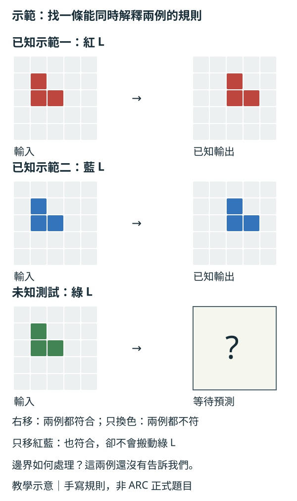

只給三組前後圖，你能猜到第四張該怎麼變嗎？
先抓住這個直覺
像玩一個沒有說明書的新桌遊：你看幾次示範，猜規則，再把規則用在沒看過的局面。
把方法畫成幾步
示範一：紅色 L 形向右一格；示範二：藍色 L 形也向右一格。
候選規則是「顏色不變，L 形向右一格」；先驗完紅、藍兩組，再為未知綠色 L 形提出輸出。
小船搬家｜教學示意
自製教學示意，非 ARC 正式題目或論文結果。紅、藍示範的輸出已知，綠色輸出尚未知；兩例支持右移，但不能排除「只把紅、藍物件右移」等其他規則，也未規定碰到邊界該怎麼辦。
- 1找物件
先問哪些格子形成一個整體，哪些只是背景。
- 2列候選
提出翻轉、搬移、計數等可能規則。
- 3驗所有例子
候選必須一致解釋已給的每一組前後圖。
- 4遇到新圖
把候選規則套用，檢查尺寸與每一格輸出。
先用兩組已知答案，篩掉不合的規則

放大閱讀圖解 ↗ · 窄螢幕可在圖內左右滑動。

圖解文字說明
- 候選甲：所有 L 向右一格
符合紅、藍兩個示範。若採此假設，綠色 L 也向右一格。
- 候選乙：只換顏色、不搬位置
紅、藍兩例都不符合：已知輸出搬了位置，且保留原色。
- 候選丙：僅紅、藍 L 向右一格
也符合兩個示範，卻會讓綠色 L 留在原處。這是少量示範留下的歧義；若物件已在最右邊，裁切、停住或其他處理也尚未被示範決定。
自己動手，改一個條件
換個條件，看看會發生什麼
這是一個小型概念玩具，不需要下載模型。互動需啟用 JavaScript。靜態示意：示範一：紅色 L 形向右一格；示範二：藍色 L 形也向右一格。 → 候選規則是「顏色不變，L 形向右一格」；先驗完紅、藍兩組，再為未知綠色 L 形提出輸出。
教學示意 · 合成資料／手寫規則 · 非論文實驗、非模型效能比較。
帶走前，想一下
只符合一張示範的規則，可以直接當成題目的唯一解釋嗎？
選一個答案，看看判斷理由。
想再走深一點？
先有輪廓就夠了。方法的細節與適用條件，可以現在讀，也可以回頭再看。
研究怎麼做？把例子接回論文
ARC 的方格很小，難處卻不是像素數。每題給少量輸入與輸出，測試時要產生新的輸出，規則可能涉及物件、對稱、數量或空間關係。原始提案用它討論「技能習得效率」：高分可能來自大量既有知識與練習，評估泛化時必須把先驗和經驗一起算進來。〔1911.01547〕
有兩種看似相近的解法。歸納先寫出能解釋示範的程式，再執行它；傳導直接預測新圖。BARC 在其設定中觀察到兩條路線互補，因而組合使用。程式通過所有示範很有價值，但少數例子可能同時符合多條規則，所以「範例全對」不是「隱藏答案已知」。〔2411.02272〕
規則與答案有何差別？
歸納留下可執行的候選函式，方便回測；傳導不必顯式生成函式。兩種表徵帶來不同偏好，實驗的互補不表示誰永遠較好。〔2411.02272〕
別把原始賽制當永恆規格
本課依原始 ARC 的少樣本設計講概念，不把不同年份、不同私有集或不同嘗試次數的分數混在一起比較。〔1911.01547〕
兩個容易混淆的地方
- 方格全對才算成功；看起來差不多通常不夠。
- ARC 成績不能單獨代表所有範圍的通用智力。
- 預訓練與人工規則也是先驗，不能當作沒有成本。
這些想法，從哪幾篇開始？
下方連到原始論文，以及固定快照中的已讀筆記。課程是入門導讀；教學類比與互動不代表論文曾做過的實驗。原筆記需 GitHub 權限；原論文可公開閱讀。
- On the Measure of Intelligence
讀技能／智力區別、先驗與 ARC 設計限制。
- 問題
- 只看熟悉任務的高分，難分辨能力來自泛化效率，還是大量資料與人工先驗。
- 方法
- 用演算法資訊論討論技能習得效率，提出以少量方格示範測新規則的 ARC。
- 邊界
- 這是智力測量與基準提案；泛化難度未實際量化，測驗效度仍待更多驗證。
- BARC
讀歸納、傳導、範例篩選與集成。
- 問題
- 少量方格示範下，應先合成變換程式還是直接預測輸出，兩條路線的分工並不清楚。
- 方法
- 以相近模型與合成資料比較歸納和傳導，優先使用通過示範的程式，再以傳導兜底。
- 邊界
- 效益依賴資料與測試時搜尋預算；程式符合少數示範，仍不等於隱藏輸出必然正確。